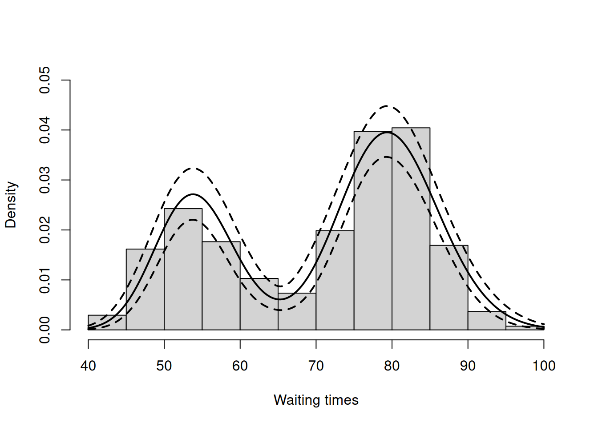

data(faithful)Bayesian Nonparametric Models in NIMBLE, Part 1: Density Estimation
announcement
tutorial
R
Bayesian Nonparametric Models in NIMBLE, Part 1: Density Estimation
Bayesian nonparametrics in NIMBLE: Density estimation
Overview
NIMBLE is a hierarchical modeling package that uses nearly the same language for model specification as the popular MCMC packages WinBUGS, OpenBUGS and JAGS, while making the modeling language extensible — you can add distributions and functions — and also allowing customization of the algorithms used to estimate the parameters of the model.
Recently, we added support for Markov chain Monte Carlo (MCMC) inference for Bayesian nonparametric (BNP) mixture models to NIMBLE. In particular, starting with version 0.6-11, NIMBLE provides functionality for fitting models involving Dirichlet process priors using either the Chinese Restaurant Process (CRP) or a truncated stick-breaking (SB) representation of the Dirichlet process prior.
In this post we illustrate NIMBLE’s BNP capabilities by showing how to use nonparametric mixture models with different kernels for density estimation. In a later post, we will take a parametric generalized linear mixed model and show how to switch to a nonparametric representation of the random effects that avoids the assumption of normally-distributed random effects.
For more detailed information on NIMBLE and Bayesian nonparametrics in NIMBLE, see the NIMBLE User Manual.
Basic density estimation using Dirichlet Process Mixture models
NIMBLE provides the machinery for nonparametric density estimation by means of Dirichlet process mixture (DPM) models (Ferguson, 1974; Lo, 1984; Escobar, 1994; Escobar and West, 1995). For an independent and identically distributed sample \(y_1, \ldots, y_n\), the model takes the form
\[y_i \mid \theta_i \sim p(y_i \mid \theta_i), \quad \theta_i \mid G \sim G, \quad G \mid \alpha, H \sim \mbox{DP}(\alpha, H), \quad i=1,\ldots, n .\]
The NIMBLE implementation of this model is flexible and allows for mixtures of arbitrary kernels, \(p(y_i \mid \theta)\), which can be either conjugate or non-conjugate to the (also arbitrary) base measure \(H\). In the case of conjugate kernel / base measure pairs, NIMBLE is able to detect the presence of the conjugacy and use it to improve the performance of the sampler.
To illustrate these capabilities, we consider the estimation of the probability density function of the waiting time between eruptions of the Old Faithful volcano data set available in R.
The observations \(y_1, \ldots, y_n\) correspond to the second column of the dataframe, and \(n = 272\).
Fitting a location-scale mixture of Gaussian distributions using the CRP representation
Model specification
We first consider a location-scale Dirichlet process mixture of normal distributionss fitted to the transformed data \(y_i^{*} = \log (y_i)\):
\[y^{*}_i \mid \mu_i, \sigma^2_i \sim \mbox{N}(\mu_i, \sigma^2_i), \quad (\mu_i, \sigma^2_i) \mid G \sim G, \quad G \mid \alpha, H \sim \mbox{DP}(\alpha, H), \quad i=1,\ldots, n,\]
where \(H\) corresponds to a normal-inverse-gamma distribution. This model can be interpreted as providing a Bayesian version of kernel density estimation for \(y^{*}_i\) using Gaussian kernels and adaptive bandwidths. On the original scale of the data, this translates into an adaptive log-Gaussian kernel density estimate.
Introducing auxiliary variables \(\xi_1, \ldots, \xi_n\) that indicate which component of the mixture generates each observation, and integrating over the random measure \(G\), we obtain the CRP representation of the model (Blackwell and MacQueen, 1973):
\[y_i^{*} \mid \{ \tilde{\mu}_k \}, \{ \tilde{\sigma}_k^{2} \} \sim \mbox{N}\left( \tilde{\mu}_{\xi_i}, \tilde{\sigma}^2_{\xi_i} \right), \quad\quad \xi \mid \alpha \sim \mbox{CRP}(\alpha), \quad\quad (\tilde{\mu}_k, \tilde{\sigma}_k^2) \mid H \sim H, \quad\quad i=1,\ldots, n ,\]
where
\[p(\xi \mid \alpha) = \frac{\Gamma(\alpha)}{\Gamma(\alpha + n)} \alpha^{K(\xi)} \prod_k \Gamma\left(m_k(\xi)\right),\]
\(K(\xi) \le n\) is the number of unique values in the vector \(\xi\), and \(m_k(\xi)\) is the number of times the \(k\)-th unique value appears in \(\xi\). This specification makes it clear that each observation belongs to any of at most \(n\) normally distributed clusters, and that the CRP distribution corresponds to the prior distribution on the partition structure.
NIMBLE’s specification of this model is given by
library(nimble)code <- nimbleCode({
for(i in 1:n) {
y[i] ~ dnorm(mu[i], var = s2[i])
mu[i] <- muTilde[xi[i]]
s2[i] <- s2Tilde[xi[i]]
}
xi[1:n] ~ dCRP(alpha, size = n)
for(i in 1:n) {
muTilde[i] ~ dnorm(0, var = s2Tilde[i])
s2Tilde[i] ~ dinvgamma(2, 1)
}
alpha ~ dgamma(1, 1)
})Note that in the model code the length of the parameter vectors muTilde and s2Tilde has been set to \(n\). We do this because the current implementation of NIMBLE requires that the length of vector of parameters be set in advance and does not allow for their number to change between iterations. Hence, if we are to ensure that the algorithm always performs as intended we need to work with the worst case scenario, i.e., the case where there are as many components as observations. While this ensures that the algorithm always works as intended, it is also somewhat inefficient, both in terms of memory requirements (when \(n\) is large a large number of unoccupied components need to be maintained) and in terms of computational burden (a large number of parameters that are not required for posterior inference need to be updated at every iteration). When we use a mixture of gamma distributions below, we will show a computational shortcut that improves the efficiency.
Note also that the value of \(\alpha\) controls the number of components we expect a priori, with larger values of \(\alpha\) corresponding to a larger number of components occupied by the data. Hence, by assigning a prior to \(\alpha\) we add flexibility to the model specification. The particular choice of a Gamma prior allows NIMBLE to use a data-augmentation scheme to efficiently sample from the corresponding full conditional distribution. Alternative prior specifications for \(\alpha\) are possible, in which case the default sampler for this parameter is an adaptive random-walk Metropolis-Hastings algorithm.
Running the MCMC algorithm
The following code sets up the data and constants, initializes the parameters, defines the model object, and builds and runs the MCMC algorithm. Because the specification is in terms of a Chinese restaurant process, the default sampler selected by NIMBLE is a collapsed Gibbs sampler (Neal, 2000).
set.seed(1)
# Model Data
lFaithful <- log(faithful$waiting)
standlFaithful <- (lFaithful - mean(lFaithful)) / sd(lFaithful)
data <- list(y = standlFaithful)
# Model Constants
consts <- list(n = length(standlFaithful))
# Parameter initialization
inits <- list(xi = sample(1:10, size=consts$n, replace=TRUE),
muTilde = rnorm(consts$n, 0, sd = sqrt(10)),
s2Tilde = rinvgamma(consts$n, 2, 1),
alpha = 1)
# Model creation and compilation
rModel <- nimbleModel(code, data = data, inits = inits, constants = consts)Defining modelBuilding modelSetting data and initial valuesRunning calculate on model
[Note] Any error reports that follow may simply reflect missing values in model variables.Checking model sizes and dimensionscModel <- compileNimble(rModel)Compiling
[Note] This may take a minute.
[Note] Use 'showCompilerOutput = TRUE' to see C++ compilation details.# MCMC configuration, creation, and compilation
conf <- configureMCMC(rModel, monitors = c("xi", "muTilde", "s2Tilde", "alpha"))===== Monitors =====
thin = 1: alpha, muTilde, s2Tilde, xi
===== Samplers =====
CRP_concentration sampler (1)
- alpha
CRP_cluster_wrapper sampler (544)
- s2Tilde[] (272 elements)
- muTilde[] (272 elements)
CRP sampler (1)
- xi[1:272] mcmc <- buildMCMC(conf)
cmcmc <- compileNimble(mcmc, project = rModel)Compiling
[Note] This may take a minute.
[Note] Use 'showCompilerOutput = TRUE' to see C++ compilation details.samples <- runMCMC(cmcmc, niter = 7000, nburnin = 2000, setSeed = TRUE)running chain 1...|-------------|-------------|-------------|-------------|
|-------------------------------------------------------|We can extract the samples from the posterior distributions of the parameters and create trace plots, histograms, and any other summary of interest. For example, for the concentration parameter \(\alpha\) we have:
# Trace plot for the concentration parameter
ts.plot(samples[ , "alpha"], xlab = "iteration", ylab = expression(alpha))# Posterior histogram
hist(samples[ , "alpha"], xlab = expression(alpha), main = "", ylab = "Frequency")quantile(samples[ , "alpha"], c(0.5, 0.025, 0.975)) 50% 2.5% 97.5%
0.4230550 0.0580579 1.5608958 Under this model, the posterior predictive distribution for a new observation \(\tilde{y}\), \(p(\tilde{y} \mid y_1, \ldots, y_n)\), is the optimal density estimator (under squared error loss). Samples for this estimator can be easily computed from the samples generated by our MCMC:
# posterior samples of the concentration parameter
alphaSamples <- samples[ , "alpha"]
# posterior samples of the cluster means
muTildeSamples <- samples[ , grep('muTilde', colnames(samples))]
# posterior samples of the cluster variances
s2TildeSamples <- samples[ , grep('s2Tilde', colnames(samples))]
# posterior samples of the cluster memberships
xiSamples <- samples [ , grep('xi', colnames(samples))]
standlGrid <- seq(-2.5, 2.5, len = 200) # standardized grid on log scale
densitySamplesStandl <- matrix(0, ncol = length(standlGrid), nrow = nrow(samples))
for(i in 1:nrow(samples)){
k <- unique(xiSamples[i, ])
kNew <- max(k) + 1
mk <- c()
li <- 1
for(l in 1:length(k)) {
mk[li] <- sum(xiSamples[i, ] == k[li])
li <- li + 1
}
alpha <- alphaSamples[i]
muK <- muTildeSamples[i, k]
s2K <- s2TildeSamples[i, k]
muKnew <- muTildeSamples[i, kNew]
s2Knew <- s2TildeSamples[i, kNew]
densitySamplesStandl[i, ] <- sapply(standlGrid,
function(x)(sum(mk * dnorm(x, muK, sqrt(s2K))) +
alpha * dnorm(x, muKnew, sqrt(s2Knew)) )/(alpha+consts$n))
}
hist(data$y, freq = FALSE, xlim = c(-2.5, 2.5), ylim = c(0,0.75), main = "",
xlab = "Waiting times on standardized log scale")
## pointwise estimate of the density for standardized log grid
lines(standlGrid, apply(densitySamplesStandl, 2, mean), lwd = 2, col = 'black')
lines(standlGrid, apply(densitySamplesStandl, 2, quantile, 0.025), lty = 2, col = 'black')
lines(standlGrid, apply(densitySamplesStandl, 2, quantile, 0.975), lty = 2, col = 'black')
Recall, however, that this is the density estimate for the logarithm of the waiting time. To obtain the density on the original scale we need to apply the appropriate transformation to the kernel.
lgrid <- standlGrid*sd(lFaithful) + mean(lFaithful) # grid on log scale
densitySamplesl <- densitySamplesStandl / sd(lFaithful) # density samples for grid on log scale
hist(faithful$waiting, freq = FALSE, xlim = c(40, 100), ylim=c(0, 0.05),
main = "", xlab = "Waiting times")
lines(exp(lgrid), apply(densitySamplesl, 2, mean)/exp(lgrid), lwd = 2, col = 'black')
lines(exp(lgrid), apply(densitySamplesl, 2, quantile, 0.025)/exp(lgrid), lty = 2,
col = 'black')
lines(exp(lgrid), apply(densitySamplesl, 2, quantile, 0.975)/exp(lgrid), lty = 2,
col = 'black')
In either case, there is clear evidence that the data has two components for the waiting times.
Generating samples from the mixing distribution
While samples from the posterior distribution of linear functionals of the mixing distribution \(G\) (such as the predictive distribution above) can be computed directly from the realizations of the collapsed sampler, inference for non-linear functionals of \(G\) requires that we first generate samples from the mixing distribution. In NIMBLE we can get posterior samples from the random measure \(G\), using the getSamplesDPmeasure function. Note that, in order to get posterior samples from \(G\), we need to monitor all the random variables involved in its computations, i.e., the membership variable, xi, the cluster parameters, muTilde and s2Tilde, and the concentration parameter, alpha.
The following code generates posterior samples from the random measure \(G\). The cMCMC object includes the model and posterior samples from the parameters. The getSamplesDPmeasure returns posterior samples from the random measure as a list (of length equal to the number of samples) of matrices, where each matrix represents the mixture for that iteration, with \(p+1\) columns, where \(p\) is the dimension of the vector of parameters with distribution \(G\) (in this example \(p=2\)).
samplesG <- getSamplesDPmeasure(cmcmc)Compiling
[Note] This may take a minute.
[Note] Use 'showCompilerOutput = TRUE' to see C++ compilation details.|-------------|-------------|-------------|-------------|
|-------------------------------------------------------|The following code computes posterior samples of \(P(\tilde{y} > 70)\) using the posterior samples from the random measure \(G\). Note that these samples are computed based on the transformed model and a value larger than 70 corresponds to a value larger than 0.03557236 on the above defined grid.
weightIndex <- grep('weight', colnames(samplesG[[1]]))
muTildeIndex <- grep('muTilde', colnames(samplesG[[1]]))
s2TildeIndex <- grep('s2Tilde', colnames(samplesG[[1]]))
probY70 <- rep(0, nrow(samples)) # posterior samples of P(y.tilde > 70)
for(i in seq_len(nrow(samples))) {
probY70[i] <- sum(samplesG[[i]][, weightIndex] *
pnorm(0.03557236, mean = samplesG[[i]][, muTildeIndex],
sd = sqrt(samplesG[[i]][, s2TildeIndex]), lower.tail = FALSE))
}
hist(probY70, xlab = "Probability", ylab = "P(yTilde > 70 | data)" , main = "" )Fitting a mixture of gamma distributions using the CRP representation
NIMBLE is not restricted to using Gaussian kernels in DPM models. In the case of the Old Faithful data, an alternative to the mixture of Gaussian kernels on the logarithmic scale that we presented in the previous section is a (scale-and-shape) mixture of Gamma distributions on the original scale of the data.
Model specification
In this case, the model takes the form
\[y_i \mid \{ \tilde{\beta}_k \}, \{ \tilde{\lambda}_k \} \sim \mbox{Gamma}\left( \tilde{\beta}_{\xi_i}, \tilde{\lambda}_{\xi_i} \right), \quad\quad \xi \mid \alpha \sim \mbox{CRP}(\alpha), \quad\quad (\tilde{\beta}_k, \tilde{\lambda}_k) \mid H \sim H ,\]
where \(H\) corresponds to the product of two independent Gamma distributions. The following code provides the NIMBLE specification for the model:
code <- nimbleCode({
for(i in 1:n) {
y[i] ~ dgamma(shape = beta[i], scale = lambda[i])
beta[i] <- betaTilde[xi[i]]
lambda[i] <- lambdaTilde[xi[i]]
}
xi[1:n] ~ dCRP(alpha, size = n)
for(i in 1:50) { # only 50 cluster parameters
betaTilde[i] ~ dgamma(shape = 71, scale = 2)
lambdaTilde[i] ~ dgamma(shape = 2, scale = 2)
}
alpha ~ dgamma(1, 1)
})Note that in this case the vectors betaTilde and lambdaTilde have length \(50 \ll n = 272\). This is done to reduce the computational and storage burdens associated with the sampling algorithm. You could think about this approach as truncating the process, except that it can be thought of as an exact truncation. Indeed, under the CRP representation, using parameter vector(s) with a length that is shorter than the number of observations in the sample will lead to a proper algorithm as long as the number of components instatiated by the sampler is strictly lower than the length of the parameter vector(s) for every iteration of the sampler.
Running the MCMC algorithm
The following code sets up the model data and constants, initializes the parameters, defines the model object, and builds and runs the MCMC algorithm for the mixture of Gamma distributions. Note that, when building the MCMC, a warning message about the number of cluster parameters is generated. This is because the lengths of betaTilde and lambdaTilde are smaller than \(n\). Also, note that no error message is generated during execution, which indicates that the number of clusters required never exceeded the maximum of 50.
data <- list(y = faithful$waiting)
set.seed(1)
inits <- list(xi = sample(1:10, size=consts$n, replace=TRUE),
betaTilde = rgamma(50, shape = 71, scale = 2),
lambdaTilde = rgamma(50, shape = 2, scale = 2),
alpha = 1)
rModel <- nimbleModel(code, data = data, inits = inits, constants = consts)Defining modelBuilding modelSetting data and initial valuesRunning calculate on model
[Note] Any error reports that follow may simply reflect missing values in model variables.Checking model sizes and dimensionscModel <- compileNimble(rModel)Compiling
[Note] This may take a minute.
[Note] Use 'showCompilerOutput = TRUE' to see C++ compilation details.conf <- configureMCMC(rModel, monitors = c("xi", "betaTilde", "lambdaTilde", "alpha"))===== Monitors =====
thin = 1: alpha, betaTilde, lambdaTilde, xi
===== Samplers =====
CRP_concentration sampler (1)
- alpha
CRP_cluster_wrapper sampler (100)
- betaTilde[] (50 elements)
- lambdaTilde[] (50 elements)
CRP sampler (1)
- xi[1:272] mcmc <- buildMCMC(conf) [Warning] sampler_CRP: The number of clusters based on the cluster parameters
is less than the number of potential clusters. The MCMC is not
strictly valid if it ever proposes more components than cluster
parameters exist; NIMBLE will warn you if this occurs.cmcmc <- compileNimble(mcmc, project = rModel)Compiling
[Note] This may take a minute.
[Note] Use 'showCompilerOutput = TRUE' to see C++ compilation details.samples <- runMCMC(cmcmc, niter = 7000, nburnin = 2000, setSeed = TRUE)running chain 1...|-------------|-------------|-------------|-------------|
|-------------------------------------------------------|In this case we use the posterior samples of the parameters to construct a trace plot and estimate the posterior distribution of \(\alpha\):
# Trace plot of the posterior samples of the concentration parameter
ts.plot(samples[ , 'alpha'], xlab = "iteration", ylab = expression(alpha))# Histogram of the posterior samples for the concentration parameter
hist(samples[ , 'alpha'], xlab = expression(alpha), ylab = "Frequency", main = "")Generating samples from the mixing distribution
As before, we obtain samples from the posterior distribution of \(G\) using the getSamplesDPmeasure function.
samplesG <- getSamplesDPmeasure(cmcmc)Compiling
[Note] This may take a minute.
[Note] Use 'showCompilerOutput = TRUE' to see C++ compilation details.|-------------|-------------|-------------|-------------|
|-------------------------------------------------------|## sampleDPmeasure: Approximating the random measure by a finite stick-breaking representation with and error smaller than 1e-10, leads to a truncation level of 28.We use these samples to create an estimate of the density of the data along with a pointwise 95% credible band:
grid <- seq(40, 100, len = 200)
weightIndex <- grep('weight', colnames(samplesG[[1]]))
betaTildeIndex <- grep('betaTilde', colnames(samplesG[[1]]))
lambdaTildeIndex <- grep('lambdaTilde', colnames(samplesG[[1]]))
densitySamples <- matrix(0, ncol = length(grid), nrow = nrow(samples))
for(iter in seq_len(nrow(samples))) {
densitySamples[iter, ] <- sapply(grid, function(x)
sum(samplesG[[iter]][ , weightIndex] * dgamma(x, shape = samplesG[[iter]][ , betaTildeIndex],
scale = samplesG[[iter]][ , lambdaTildeIndex])))
}
hist(faithful$waiting, freq = FALSE, xlim = c(40,100), ylim = c(0, .05), main = "",
ylab = "", xlab = "Waiting times")
lines(grid, apply(densitySamples, 2, mean), lwd = 2, col = 'black')
lines(grid, apply(densitySamples, 2, quantile, 0.025), lwd = 2, lty = 2, col = 'black')
lines(grid, apply(densitySamples, 2, quantile, 0.975), lwd = 2, lty = 2, col = 'black')Again, we see that the density of the data is bimodal, and looks very similar to the one we obtained before.
Fitting a DP mixture of Gammas using a stick-breaking representation
Model specification
An alternative representation of the Dirichlet process mixture uses the stick-breaking representation of the random distribution \(G\) (Sethuraman, 1994). NIMBLE allows us to specify an approximation that involves a truncation of the Dirichlet process to a finite number of atoms, \(L\). The resulting model therefore reduces to a finite mixture with \(L\) components and a very particular prior on the weights of the mixture components.
Introducing auxiliary variables, \(z_1, \ldots, z_n\), that indicate which component generated each observation, the corresponding model for the mixture of Gamma densities discussed in the previous section takes the form
\[y_i \mid \{ {\beta}_k^{\star} \}, \{ {\lambda}_k^{\star} \}, z_i \sim \mbox{Gamma}\left( {\beta}_{z_i}^{\star}, {\lambda}_{z_i}^{\star} \right), \quad\quad \boldsymbol{z} \mid \boldsymbol{w} \sim \mbox{Discrete}(\boldsymbol{w}), \quad\quad ({\beta}_k^{\star}, {\lambda}_k^{\star}) \mid H \sim H ,\]
where \(H\) is again the product of two independent Gamma distributions,
\[w_1=v_1, \quad\quad w_l=v_l\prod_{m=1}^{l-1}(1-v_m), \quad l=2, \ldots, L-1,\quad\quad w_L=\prod_{m=1}^{L-1}(1-v_m)\]
with \(v_l \mid \alpha\sim \mbox{Beta}(1, \alpha), l=1, \ldots, L-1\). The following code provides the NIMBLE specification for the model:
code <- nimbleCode(
{
for(i in 1:n) {
y[i] ~ dgamma(shape = beta[i], scale = lambda[i])
beta[i] <- betaStar[z[i]]
lambda[i] <- lambdaStar[z[i]]
z[i] ~ dcat(w[1:Trunc])
}
for(i in 1:(Trunc-1)) { # stick-breaking variables
v[i] ~ dbeta(1, alpha)
}
w[1:Trunc] <- stick_breaking(v[1:(Trunc-1)]) # stick-breaking weights
for(i in 1:Trunc) {
betaStar[i] ~ dgamma(shape = 71, scale = 2)
lambdaStar[i] ~ dgamma(shape = 2, scale = 2)
}
alpha ~ dgamma(1, 1)
}
)Note that the truncation level \(L\) of \(G\) has been set to a value Trunc, which is to be defined in the constants argument of the nimbleModel function.
Running the MCMC algorithm
The following code sets up the model data and constants, initializes the parameters, defines the model object, and builds and runs the MCMC algorithm for the mixture of Gamma distributions. When a stick-breaking representation is used, a blocked Gibbs sampler is assigned (Ishwaran, 2001; Ishwaran and James, 2002).
data <- list(y = faithful$waiting)
set.seed(1)
consts <- list(n = length(faithful$waiting), Trunc = 50)
inits <- list(betaStar = rgamma(consts$Trunc, shape = 71, scale = 2),
lambdaStar = rgamma(consts$Trunc, shape = 2, scale = 2),
v = rbeta(consts$Trunc-1, 1, 1),
z = sample(1:10, size = consts$n, replace = TRUE),
alpha = 1)
rModel <- nimbleModel(code, data = data, inits = inits, constants = consts)Defining modelBuilding modelSetting data and initial valuesRunning calculate on model
[Note] Any error reports that follow may simply reflect missing values in model variables.Checking model sizes and dimensionscModel <- compileNimble(rModel)Compiling
[Note] This may take a minute.
[Note] Use 'showCompilerOutput = TRUE' to see C++ compilation details.conf <- configureMCMC(rModel, monitors = c("w", "betaStar", "lambdaStar", 'z', 'alpha'))===== Monitors =====
thin = 1: alpha, betaStar, lambdaStar, w, z
===== Samplers =====
RW sampler (101)
- betaStar[] (50 elements)
- lambdaStar[] (50 elements)
- alpha
conjugate sampler (49)
- v[] (49 elements)
categorical sampler (272)
- z[] (272 elements)mcmc <- buildMCMC(conf)
cmcmc <- compileNimble(mcmc, project = rModel)Compiling
[Note] This may take a minute.
[Note] Use 'showCompilerOutput = TRUE' to see C++ compilation details.samples <- runMCMC(cmcmc, niter = 24000, nburnin = 4000, setSeed = TRUE)running chain 1...|-------------|-------------|-------------|-------------|
|-------------------------------------------------------|Using the stick-breaking approximation automatically provides an approximation, \(G_L\), of the random distribution \(G\). The following code computes posterior samples of \(G_L\) using posterior samples from the samples object, and from them, a density estimate for the data.
betaStarSamples <- samples[ , grep('betaStar', colnames(samples))]
lambdaStarSamples <- samples[ , grep('lambdaStar', colnames(samples))]
weightSamples <- samples[ , grep('w', colnames(samples))]
grid <- seq(40, 100, len = 200)
densitySamples <- matrix(0, ncol = length(grid), nrow = nrow(samples))
for(i in 1:nrow(samples)) {
densitySamples[i, ] <- sapply(grid, function(x)
sum(weightSamples[i, ] * dgamma(x, shape = betaStarSamples[i, ],
scale = lambdaStarSamples[i, ])))
}
hist(faithful$waiting, freq = FALSE, xlab = "Waiting times", ylim=c(0,0.05),
main = '')
lines(grid, apply(densitySamples, 2, mean), lwd = 2, col = 'black')
lines(grid, apply(densitySamples, 2, quantile, 0.025), lwd = 2, lty = 2, col = 'black')
lines(grid, apply(densitySamples, 2, quantile, 0.975), lwd = 2, lty = 2, col = 'black')
As expected, this estimate looks identical to the one we obtained through the CRP representation of the process.
More information and future development
Please see our User Manual for more details.
We’re in the midst of improvements to the existing BNP functionality as well as adding additional Bayesian nonparametric models, such as hierarchical Dirichlet processes and Pitman-Yor processes, so please add yourself to our announcement or user support/discussion Google groups.
References
Blackwell, D. and MacQueen, J. 1973. Ferguson distributions via Polya urn schemes. The Annals of Statistics 1:353-355.
Ferguson, T.S. 1974. Prior distribution on the spaces of probability measures. Annals of Statistics 2:615-629.
Lo, A.Y. 1984. On a class of Bayesian nonparametric estimates I: Density estimates. The Annals of Statistics 12:351-357.
Escobar, M.D. 1994. Estimating normal means with a Dirichlet process prior. Journal of the American Statistical Association 89:268-277.
Escobar, M.D. and West, M. 1995. Bayesian density estimation and inference using mixtures. Journal of the American Statistical Association 90:577-588.
Ishwaran, H. and James, L.F. 2001. Gibbs sampling methods for stick-breaking priors. Journal of the American Statistical Association 96: 161-173.
Ishwaran, H. and James, L.F. 2002. Approximate Dirichlet process computing in finite normal mixtures: smoothing and prior information. Journal of Computational and Graphical Statistics 11:508-532.
Neal, R. 2000. Markov chain sampling methods for Dirichlet process mixture models. Journal of Computational and Graphical Statistics 9:249-265.
Sethuraman, J. 1994. A constructive definition of Dirichlet prior. Statistica Sinica 2: 639-650.